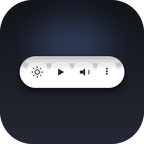
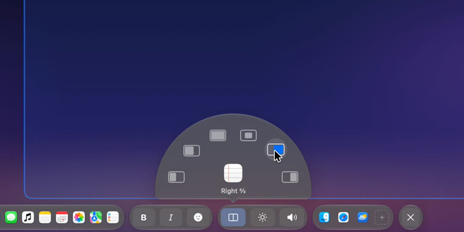
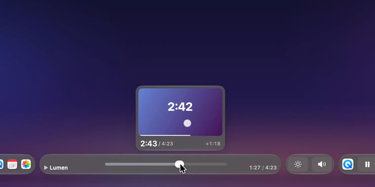

For the new MacBook Pro · macOS 27Your app’s menus,
within finger reach.
A glass control strip at the bottom of your screen. It follows the front app, presses that app’s own menu commands for you, and never steals focus — so you can tap a key and keep typing. Keep it out of the way, or tuck it into a tiny corner ball.
Free while in beta — everything unlocked. · macOS 27 on Apple silicon · touch on the MacBook Pro with PROLED XDR, mouse or trackpad on any Apple silicon Mac running macOS 27
It follows the app you’re in
Switch apps and the keys switch with you. Tap one and keep typing.
250+ app packs, one bar
Finder, Safari, Chrome, Mail, Notes, Calendar, Music, Photos, Preview, Pages, VS Code, terminal, Office, Adobe and more. The bar knows each app’s real menu commands; 900+ apps have hand-picked keys.
Presses the real menu command
Lidkeys uses the Accessibility API to press the app’s own menu item — not a synthetic shortcut. On our test Macs, the median from mouse-up to the button responding was 2–5 ms, with focus still in the document.
Never steals focus
The bar is a non-activating panel. You can type in the document, reach down, tap Undo, and the next keystroke still lands in your app.
Glass, not a black strip
System glass with real refraction. It follows Reduce Transparency and Reduce Motion, and the labels are designed to stay readable on light wallpapers.
Brightness, volume, media
Press and slide to change brightness or volume. Play/pause and previous/next for whatever is playing — Music, Spotify, browser video and more. A media card adds ±10 s, speed and switching between sources.
Gets out of the way
Tuck the bar into a tiny corner ball when you want the screen to yourself. You can also hide the Dock until you touch the bottom edge, let windows yield to the bar, tuck it away in full screen, and follow the mouse across screens.
Apps at your fingertips
Swipe through your running apps, tap the Apps button at the left for everything else, and keep four favourites pinned next to ×.
Drop files where they belong
Drop on an app ball to open, hold for the Dock, or drop on × to trash.
New in 0.4.1
Snap windows from the bar, scrub with a preview, keep things on the Shelf, send emoji and stickers in chats, and see a word count as you type.


Downloads
A circle beside the bar catches files the moment they finish downloading. Drag one out, click to preview, or right-click to show it in Finder. Off until you turn it on.
Button size
Choose Standard or Large, or let Auto pick Large on a touch screen. Press a key with a finger and a magnified copy floats above it; slide to the next key before you lift if you missed.
Easy to find
After an update, a short What’s New window shows each new thing with a switch right next to it. Settings › Little Surprises names every hidden touch, and lets you play six of them now.
Shelf, anywhere
Let go of a file anywhere on the bar and it lands on the Shelf. To open it in an app instead, hold it over that app’s icon for a moment first. Point at an item and click its × to take it off.
Emoji and stickers in chats
Start typing in a chat app and your most-used emoji and stickers appear on the bar, sorted for that app. Add your own stickers: copy a picture and click +, import a folder, or take a screenshot of a sticker panel and let Lidkeys slice it into separate stickers.
New in 0.4: fewer trips to the menu bar
The things you do over and over — park a file, undo a few steps, run the same command again, keep the screen on — now sit right on the bar.
Keys that grow
Keep picking the same command from the menu bar and it becomes a key on the bar by itself. Swipe it up if you don’t want it.
Watch
Start an export or a big copy and switch away. A ring on that app’s ball keeps track and lights up when it’s done, so you don’t keep checking.
Stats
Settings › Stats counts your presses day by day, hands out a few badges, and makes a small card you can save or drag out.
Feels like a button
A light tap through the Force Touch trackpad when a key lands, plus soft sounds you can turn on in Settings › Haptics & Sound.
Small surprises
Step away and the corner ball breathes like an old MacBook’s sleep light. Keys you press a lot slowly take on a polish. In winter, a little snow settles on the bar.
Free while in beta — everything unlocked.
Every feature on this page is free while Lidkeys is in beta. No trial timer, no account, no license key — download it and use all of it.
Optional: an experimental AI quota pill. It appears on its own only when Strip finds AI coding tools (Claude Code, Codex, OpenCode) on your Mac, and you can turn it off in Settings. See privacy for exactly what it reads.
Download Lidkeys
Free while in beta — everything unlocked. No account and no email needed.
Not notarized: this release is signed with the Lidworks certificate but not notarized by Apple. On first launch macOS blocks it: click Done (not Move to Trash), then open System Settings → Privacy & Security, scroll down and click Open Anyway. (Right-click → Open no longer works on current macOS.) Or run xattr -dr com.apple.quarantine /Applications/Strip.app. If you require an Apple-notarized build, don’t install it yet — release notes.
- Open the downloaded
Lidkeys-0.4.1.dmgand drag Strip to Applications. - Open Strip from Applications. macOS says it can’t check it for malicious software: click Done (not Move to Trash).
- Open System Settings → Privacy & Security, scroll down and click Open Anyway.
- Strip shows a short welcome and asks for Accessibility permission, so it can read and press the front app’s menu commands.
- macOS 27 (Golden Gate) on Apple silicon. Touch features need the MacBook Pro with PROLED XDR display; on any other supported Mac the bar works with the mouse and trackpad.
- Version 0.4.1 · small download · installs as Strip.app (the name in your menu bar; Lidkeys is the product name on this page).
- No account, no subscription, no analytics. It doesn’t contact any server on its own — see privacy.
- Not notarized: this release is signed with the Lidworks certificate but not notarized by Apple. Updates keep the Accessibility permission from 0.4.1 on (coming from 0.4.0 or earlier, macOS asks once more). On first launch macOS blocks it: click Done (not Move to Trash), then open System Settings → Privacy & Security, scroll down and click Open Anyway. (Right-click → Open no longer works on current macOS.) Or run
xattr -dr com.apple.quarantine /Applications/Strip.app. The developer accepts this trade-off explicitly; don’t install it if you require an Apple-notarized build.
Works with what you already have
Touch on the MacBook Pro
Built for the bottom edge of the touchscreen MacBook Pro: finger-sized keys and press-and-slide sliders. On a Mac without touch, the identical bar works with the mouse and trackpad.
Privacy, plainly
No telemetry, no analytics, no account. During the free beta the app doesn’t contact any server on its own. The experimental AI quota pill turns on by itself only when Strip finds AI coding tools on your Mac, and you can switch it off in Settings: it reads local usage logs from Claude Code, Codex and OpenCode on your Mac, and nothing from them leaves your Mac. It looks up a DeepSeek balance only if you add your own DeepSeek API key and click Check balance. The event log stays on your Mac and records timing, coordinates and decisions — never window titles or app content.
Honest about permissions
Reading another app’s menus needs Accessibility permission. We explain it once, in plain language, and the bar keeps working without it — minus app-specific keys. Emoji and the word count while typing also need Input Monitoring; Lidkeys asks only when you first go to type in a chat app. Nothing is uploaded. See the privacy policy.
Questions
Which Macs does it support?
macOS 27 (Golden Gate) on Apple silicon. Touch features are built for the MacBook Pro with the PROLED XDR display; on any other Apple silicon Mac running macOS 27 the same bar works with the mouse and trackpad (including MacBook Air, Mac mini, Mac Studio and iMac).
Is this an App Store app?
No. The core feature — reading and pressing another app’s menu — is not allowed inside the App Store sandbox. Lidkeys is available directly from this site. This build is signed with the Lidworks certificate but not notarized (the developer is not in the Apple Developer Program): on first launch macOS blocks it: click Done (not Move to Trash), then System Settings → Privacy & Security → Open Anyway. Or run xattr -dr com.apple.quarantine /Applications/Strip.app. If you require an Apple-notarized build, don’t install it yet. Updates are downloaded from this page.
Why does it need Accessibility permission?
To read the front app’s menu and press the item you tapped. It is used only on your Mac and never uploaded. Without it, brightness, volume, media, system keys and app switching still work.
Is it really free?
Yes. While Lidkeys is in beta, every feature is unlocked for everyone — no trial timer, no license key and nothing to buy. If a paid version comes later, it will be announced on this page first.
macOS keeps asking before Lidkeys can control an app
macOS 27.3 asks before Lidkeys can control another app. Choose Allow. To stop being asked for an app, open System Settings › Privacy & Security › System & App Protection Override, pick Strip (the app’s name on your Mac), and set that app to At Any Time.
Why does it ask for Input Monitoring?
Only for the things that react to typing: emoji while typing and the word count. Lidkeys needs to notice that a key was pressed to know you’re typing; it never records, saves or sends what you type. It asks the first time you go to type in a chat app, and everything else works without it.
Do you collect data?
No telemetry, no analytics, no account. During the free beta the app doesn’t contact any server on its own. The optional AI quota pill appears on its own only when Strip finds AI coding tools on your Mac (you can turn it off in Settings); it reads local usage logs from Claude Code, Codex and OpenCode without sending them anywhere, and a DeepSeek balance lookup only happens if you add your own DeepSeek API key and click Check balance. The event log stays on your Mac and can be exported redacted.
How do updates work?
Updates are free. The app checks by opening this page when you choose “Check for updates…” — it doesn’t run a background updater or download anything by itself. Install the newer version over the old one; your settings carry over.
Is Lidkeys the same app as Strip?
Yes. “Lidkeys” is the product name on this site; the app installs as Strip.app, and that’s the name you’ll see in the menu bar and in System Settings → Privacy & Security → Accessibility.